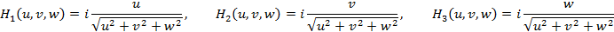
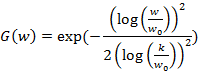
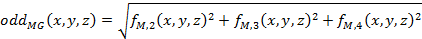
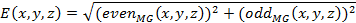
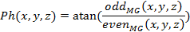
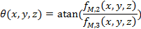
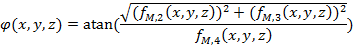

Journal of Multimedia Theory and Applications (JMTA)
ISSN: 2368-5956

Volume 1, Year 2014 - Pages 1-10
DOI: 10.11159/jmta.2014.001
Multi-scale Analysis of Local Phase and Local Orientation for Dynamic Facial Expression Recognition
Seyedehsamaneh Shojaeilangari¹, Eam-Khwang Teoh¹, Wei-Yun Yau², Jun Li²
¹School of Electrical and Electronic Engineering,
Nanyang Technological University, Singapore
seyedehs1@e.ntu.edu.sg; eekteoh@ntu.edu.sg
²Institute for Infocomm Research, A*STAR, Singapore
wyyau@i2r.a-star.edu.sg; jli@i2r.a-star.edu.sg
Abstract - Automated facial expression analysis is an active research area for human-computer interaction as it enables computers to understand and interact with humans in more natural ways. In this work, a novel local descriptor is proposed for facial expression analysis in a video sequence. The proposed descriptor is based on histograms of local phase and local orientation of gradients obtained from a sequence of face images to describe the spatial and temporal information of the face images. The descriptor is able to effectively represent the temporal local information and its spatial locations which are important cues for facial expression recognition. This is further extended to multi-scale to achieve better performance in natural settings where the image resolution varies. The experimental results conducted on the Cohn-Kanade (CK+) database to detect six basic emotions achieved an accuracy of 94.58%. For the AVEC 2011 video-subchallenge, the detection of four emotion dimensions obtained comparable accuracy with the highest reported average accuracy in the test evaluation.The advantages of our method include local feature extraction incorporating temporal domain, high accuracy and robustness to illumination changes. Thus the proposed descriptor is suited for continuous facial expression analysis in the area of human-computer interaction.
Keywords: Local phase, local orientation, spatio-temporal histogram, dynamic facial expression, emotion recognition.
© Copyright 2015 Authors This is an Open Access article published under the Creative Commons Attribution License terms. Unrestricted use, distribution, and reproduction in any medium are permitted, provided the original work is properly cited.
Date Received: 2013-09-17
Date Accepted: 2014-02-05
Date Published: 2014-02-24
1. Introduction
Facial expression plays an important role in human-human interaction and may be considered as the most important communication link to convey the information related to the states of human emotion. This motivated many researchers to develop automatic solutions that enable the computers to recognize facial expression and to derive the associated emotional states in order to develop better human-computer interaction systems. If successful, the solutions will also allow computers to generate human-like response that commensurate with the recognized emotion.
Although much progress has been reported in this field, there are still difficult research challenges remaining to achieve a fully automated facial expression recognition system. Majority of the previous works focused on facial expression processing via static images and ignored the dynamic properties of a face while expressing an emotion [1-5]. However, it has been shown that human visual system is able to detect an expression more accurately when its temporal information is taken into account [6].
Considering the temporal information of a dynamic event, a few techniques have been developed to deal with facial expression recognition. These include geometrical displacement [7], Hidden Markov Models [8, 9], dynamic texture descriptors [10], and Dynamic Bayesian Networks (DBN) [11].
Deriving a proper facial representation from a sequence of images is crucial to the success of a facial expression recognition system, especially if the application requires continuous processing of the video stream such as in the case of human-computer interaction. The local energy and local phase analysis methods have been successfully used to detect various interest points in images such as edges, corners, valleys, and lines. Based on physiological evidence, human visual system is able to detect the patterns in an image where the phase information is highly ordered [12]. There were several reported works done to detect the low-level facial image features using local energy or local phase information. In addition, phase-based feature detection is popularly used in medical image analysis [13].
Chi Ho et al. [14] proposed a multi-scale local phase quantization histogram for face detection to alleviate the blur and illumination conditions challenges. Their novel descriptor is formed by projecting the Multi-scale local phase information into an LDA space.
Sarfraz and Hellwich [15] presented a robust pose estimation procedure for face recognition using the local energy model. Their feature descriptor is claimed to be insensitive to illumination and some other common variations in facial appearance such as skin color. Gundimada and Asari [12] also proposed a novel feature selection on phase congruency images to recognize faces with extreme variations such as partial occlusion, non-uniform occlusion, and varying expressions.
The work by Buciu [16] is the only study we found that uses phase congruency to extract the facial features for facial expression classification. The author measured the similarity of sample phases in the frequency domain and used them to construct reliable features.
In this paper, we focus on face emotion recognition from video sequences considering the spatio-temporal information of such expressions. In our proposed approach, a novel phase-based descriptor is proposed to process the local structures of sequenced images. We also extend our feature set by considering the complementary information of local orientations. The final descriptor is the concatenation of spatio-temporal histogram of local phase and spatio-temporal histogram of local orientation. The novelty of our proposed method includes:
(1) Extending the phase-based descriptor for spatio-temporal event analysis.
(2) Formulating the 3D local orientation of features as additional information to represent all local structures.
(3) Combining the spatio-temporal histogram of local phase and local orientation to extract both static and dynamic information as well as spatial information of a face from a video sequence.
(4) Incorporating multi-scale analysis for better performance in natural settings with varying image resolution.
2. Background
Local phase and local energy are two important concepts used to describe the local structural information of an image. Local phase is able to effectively depict useful image structures such as transitions or discontinuities, providing the type of structure and location information while preserving the image structures. Another advantage of phase-based feature is that it is not sensitive to intensity variation. Local energy, as a complementary descriptor to local phase, contains the strength or sharpness of the feature [17].
The concept of local phase and energy was originally proposed for 1 dimension (1D) signal analysis. For 1D signal, orientation is trivial and does not contain other additional information. Therefore, the local structure is totally described by local phase and energy [13]. However, for higher dimensional signal (3D in our case), local orientation is needed in addition to local phase and energy, to completely describe the features in the signal.
To extend the concept of local analysis to 3D, a quadrature pair of oriented bandpass filters is used. However, since the oriented filter bank is discrete, thus proper filter selection is required to cater to different orientation and scale present in an image. This motivate researchers to use the monogenic signal concept [17].
The monogenic signal provides an isotropic extension of the analytic signal to 3D by introducing a vector-valued odd filter (Riesz filter) with Fourier representation [17] as:
|
 |
(1) |
where u, v, and w are the Fourier domain coordinates and i represents the imaginary part of the signal.
The monogenic signal is then represented by combining the original 3D image with the Riesz filtered components:
|
(2) |
where and are defined as follows:
|
(3) |
|
(4) |
|
(5) |
|
(6) |
* is the convolution operation, and h1, h2 and h3 are the spatial domain representations of H1, H2 and H3, respectively. The 3D image is first filtered using a bandpass filter such as Gaussian, Gabor, and Log-Gabor filters. We used an isotropic (no orientation selectivity) log-Gabor filter as defined by Eq. (7) as such filter can be designed with arbitrary bandwidth and the bandwidth can be optimised to produce a filter with minimal spatial extent[18] .
|
 |
(7) |
where is the filter's centre frequency, parameter k controls the bandwidth of the filter. Fig. 1 illustrates the monogenic components of a sample video frame.
The monogenic signal can also be represented in the same form as 1D analytic signal:
|
(8) |
where the even and odd filter response are define as follows:
|
(9) |
|
 |
(10) |
With the additions, the 3D monogenic signal can be used for feature extraction.
3. Methodology
To recognize facial expressions from video sequences, a set of features that best describe the facial muscle changes during an expression is required. Two complementary feature sets are proposed in this study: Spatio-Temporal Histogram of Local Phase (STHLP) and Spatio-Temporal Histogram of Local Orientation (STHLO). The final feature set is formed by concatenating both STHLP and STHLO which we named Local Phase-Local Orientation (LPLO).
3.1. Spatio-Temporal Histogram of Local Phase (STHLP)
The local energy and local phase of the 3D monogenic signal given by Eq. (8) is computed as follows:
|
 |
(11) |
|
 |
(12) |
where E and Ph denote local energy and phase respectively. and are even and odd parts of the monogenic signal.
In this paper, a novel local volumetric feature is proposed to describe the local regions of a video sequence. Each pixel of a video frame is encoded by a phase angle. To construct a weighted histogram of local phase, the phase is quantized into equal sized bins. Energy of each pixel is then used as a vote to the corresponding phase bin. Fig. 2a shows the image of energy of a sample video frame. The votes belonging to the same bin are accumulated over local spatio-temporal regions that we call cells. To reduce the noise, only the pixels that have energy more than a pre-defined threshold can participate in the voting. The next step is grouping cells into larger spatial segments named blocks. Each block descriptor is composed by concatenating all the cell histograms within that block. . The block histogram contrast normalization is then applied to get a coherent description. The final descriptor of the frame is then obtained by concatenating all the normalized block histograms of that frame.
It is worth noting that our proposed spatio-temporal descriptor is able to handle different length of the video sequence. It can also support video segments of varying lengths.
3.2. Spatio-Temporal Histogram of Local Orientation (STHLO)
We consider the local orientation as complementary information to describe the local structures of the video sequence. Each pixel orientation of the sequenced images is described by two angles as follows:
|
 |
(13) |
|
 |
(14) |
To construct a weighted histogram of orientations similar to STHLP, are quantized into equally sized bins. For the vote's weight, pixel contribution can be used as the magnitude of the orientation vector given by the following equations:
|
(15) |
|
(16) |
whereis used to vote the bins related to and
for voting the bins corresponding to .
The voting components (and  ) are depicted in Fig. 2b and Fig. 2c respectively for a sample
video frame. Such proposed method is efficient as it
utilizes the magnitude information already computed previously. This is
different from the common approach used is to compute the local orientation,
based on the output of ensembles of oriented filters like Prewitt, Sobel, and
Laplace at differing orientation [19-22].
) are depicted in Fig. 2b and Fig. 2c respectively for a sample
video frame. Such proposed method is efficient as it
utilizes the magnitude information already computed previously. This is
different from the common approach used is to compute the local orientation,
based on the output of ensembles of oriented filters like Prewitt, Sobel, and
Laplace at differing orientation [19-22].
3.3. Multi-scale Analysis
Multi-scale or multi-resolution analysis of facial features has been used in many research works [23, 24]. Since some facial features are detectable at a certain scale and may not be as distinguishable at other scales, it is more reliable to extract the features at various scales. The multi-resolution representation can be achieved by varying the wavelengths of the bandpass filter in Eq. (7). Finally, the LPLO is obtained from the combination of the features at different scales. Fig.3 illustrates how the energy component defined by Eq. (10) varies by changing the filter scale.
4. Results and Discussion
We evaluated our proposed method on two publicly available databases for facial expression recognition. The first is Cohn-Kanade (CK+) [25] dataset consisting of acted emotional states under controlled environment. The second is the Audio Visual Emotion Challenge (AVEC 2011) [26] which contains spontaneous emotional states in natural settings.
4.1. Cohn-Kanade Database
CK+includes 593 video sequences recorded from 123 university students. The subjects were asked to express a series of 23 facial displays including single or combined action units. Six of the displays were based on descriptions of prototype basic emotions (joy, surprise, anger, fear, disgust, and sadness). For our experiment, 309 sequences from the dataset which have been labeled with one of the six basic emotions are used. Other sequences may be labeled as "contempt" which is not our objective or may have no label. Fig. 4 shows the sample images of a subject expressing six basic emotions
To evaluate our proposed approach, Leave-One subject-Out (LOO) cross validation is used. In this method, there is no information of the same subject in both the training and test samples and consequently, our experiments will be subject independent. To classify the samples into six basic emotions, a Support Vector Machine (SVM) with polynomial kernel function is used. SVM has been originally proposed as a binary classifier, and subsequently extended to multi-class problems [27]. For our database, we used one-against-all technique that constructs 6 binary SVM classifiers to categorize each emotion against all the others. The final outcome is obtained using majority voting.
We also applied a preprocessing stage before feature extraction. The images were aligned to have a constant distance between the two eyes, and then rotated to line up the eye coordinates horizontally. Finally, the faces were cropped into a rectangle of size 100×100. Since our method is robust to illumination variation, we do not require illumination normalization at the pre-processing step.
The next experiment was carried out using different log-Gabor parameters to check the effect of filter wavelength and bandwidth on the classification performance. Our experimental results show that the bandwidth of 0.75 and 3 scales of the bandpass filter with wavelengths of {4, 8, 12} are superior to other settings in term of detection rate. The results are shown in Table 1 and Table 2 respectively. These parameters are then fixed in our subsequent experiments.
The next experiment was conducted on different number of blocks and cells to compare the length of features and the detection rate. Table 3 tabulates the results obtained. Based on this experiment, partitioning the data into 32 blocks (4×4×2) and 9 cells (3×3×1) outperforms the other settings in term of classification accuracy.
We also evaluated both feature sets (STHLP and STHLO) individually and in combination to validate whether they are indeed complementary descriptors. The combined feature is named LPLO in this table. The results of our evaluation are summarized in Table 4. The detection rate of the combined features is better than each feature set individually.
We have also presented the results of LOO cross validation as a confusion matrix in Table 5 to analyze the performance of our proposed method on each expression. It can be seen that the detection rate of two expressions "fear" and "sadness" are not as high as the other expressions.
In the CK+ database, there are limited samples with illumination and skin colour variations. In addition, the variation is only minor and not sufficient to test the effect of illumination variation on our proposed descriptor. As such, we have recorded an additional 15 video sequences of happy and surprize expressions under different illumination conditions. We used the recorded samples to evaluate our classifier trained using the CK+ database (which has only minor illumination variation). Our proposed method is able to detect the true label for 14 out of the total 15 sequences (93.33% accuracy). Fig. 5 shows the recorded signals for happy expression, and a sample face of each sequence together with the recognition results. The reason one of the sequences cannot be detected is due to the strong contrast appearing at the mouth region causing the feature at part of the mouth with much darker illumination not to be properly obtained.
Table 6 presents a comparison of our proposed approach to the other reported methods in the literatures that also used the CK+ database. Brief information of each method including the number of subjects, dynamic or static process, evaluation measurement, and classification accuracy is included. It is noted that since the experimental setting used in these approaches is not identical, it is difficult to compare quantitatively the performance of listed approaches. However, it is still useful to compare them in relative sense to know the strengths and weaknesses of each method. Our experiment was done using the largest number of subjects, yet the result is comparable to the best approach, LBPTOP [10]. However, our approach is an order faster than LBPTOP. The computational time of our proposed feature extraction for one subject is around 0.50 sec while LBPTOP requires 5.5 sec.
Table 1. Effect of log-Gabor bandwidth on classification accuracy for CK+ database. The results are based on 50 blocks (5×5×2), and 9 cells (3×3×1).
|
Detection Rate (%) |
|
|
0.55 |
91.94 |
|
0.65 |
92.24 |
|
0.75 |
94.58 |
|
0.85 |
93.47 |
Table 2. Effect of log-Gabor scales on classification accuracy for CK+ database. The results are based on 50 blocks (5×5×2), and 9 cells (3×3×1).
|
# Scales |
Wavelength |
Detection Rate(%) |
|
2 |
{4, 8} |
91.24 |
|
2 |
{8, 16} |
92.47 |
|
3 |
{4, 8, 12} |
94.58 |
|
3 |
{8, 12, 16} |
93.22 |
|
4 |
{2, 8, 12, 16} |
92.86 |
|
4 |
{8, 12, 16, 32} |
91.43 |
Table 3. Comparison on number of blocks and number of cells on classification accuracy.
|
No. Blocks |
No. cells |
No. features |
Detection rate (%) |
|
3×3×2 |
2×2×1 |
5184 |
87.41 |
|
3×3×2 |
3×3×1 |
11664 |
80.64 |
|
4×4×2 |
2×2×1 |
9216 |
94.16 |
|
4×4×2 |
3×3×1 |
20736 |
94.58 |
|
5×5×2 |
2×2×1 |
14400 |
93.28 |
|
5×5×2 |
3×3×1 |
32400 |
93.57 |
Table 4. Comparison of STHLP, STHLO, and combined features.
|
Descriptor |
Detection rate (%) |
|
STHLP |
91.23 |
|
STHLO |
89.12 |
|
Combined feature(LPLO) |
94.58 |
Table 6. Comparison of other approaches on CK+ database.
|
Method |
#Subject |
#Sequence |
Dynamic |
Evaluation |
Recognition Rate (%) |
|
LBP+SVM [28] |
96 |
320 |
N |
10-fold |
88.4 |
|
Gabor+adaboost+SVM [29] |
90 |
313 |
N |
LOO |
93.8 |
|
Optical flow+HMM [30] |
97 |
- |
Y |
5-fold |
90.9 |
|
Multistream NN [31] |
90 |
284 |
Y |
- |
93.66 |
|
Geometricalfeatures+NN [32] |
97 |
375 |
N |
- |
93.8 |
|
LBPTOP [10] |
97 |
375 |
Y |
10-fold |
96.26 |
|
Proposed method (LPLO) |
118 |
309 |
Y |
LOO |
94.58 |
4.2. AVEC 2011 Database
We also evaluated our proposed approach using the AVEC 2011 database which is more challenging as it is captured in a natural setting. This database consist of 95 video recorded at 49.979 frames per second at a spatial resolution of 780×580 pixels. The binary labels along the four affective dimensions (activation, expectation, power and valence) are provided for each video frame. The data is divided into 3 subsets: training, development, and testing. The training set consists of 31 records, while the development set (for validation of the model parameters) consists of 32 records and the test set consists of 11 video sequences.
As described in the challenge baselines [26], because of the large amount of data (more than 1.3 million frames), we sampled the videos using a constant sampling rate. We segmented every 60 frames of each video with 20% overlap and then sampled it with a down sampling rate of 6. So each volume data includes 10 frames. Due to memory constrains, we processed only 1550 frames of each video for the training and development sets (total of 48050 frames for training and 49600 frames for development).
The information describing the position of the face and eyes are provided in the database. The pre-processing stage includes only normalizing the faces to have a constant distance between the two eyes.
Table 5 shows the recognition results of our approach compared to the other reported results. We just reported the weighted accuracy of the methods which is the correctly detected samples divided by the total number of samples. The average results obtained by our method are above the baseline results and also [34], [35] for the development subset. For test subset, we achieved the best average accuracy among all competitors. This means that the proposed descriptor can be effective for natural and spontaneous emotion detection in natural setting.
Table 7. Comparison of the detection rate for the AVEC 2011 database.A stands for activation, E for expectancy, P for power, and V for valence.
|
Reference |
Development |
Test |
||||||||
|
A |
E |
P |
V |
Average |
A |
E |
P |
V |
Average |
|
|
Baseline [26] |
60.2 |
58.3 |
56.3 |
63.6 |
59.6 |
42.2 |
53.6 |
36.4 |
52.5 |
46.2 |
|
[33] |
81.7 |
73.1 |
73.3 |
73.5 |
75.4 |
65.5 |
61.7 |
47.1 |
69.8 |
61.0 |
|
[34] |
69.3 |
65.6 |
59.9 |
67.8 |
65.6 |
56.5 |
59.7 |
48.5 |
59.2 |
55.9 |
|
[35] |
58.2 |
53.5 |
53.7 |
53.2 |
54.65 |
56.9 |
47.5 |
47.3 |
55.5 |
51.8 |
|
Our method |
65.3 |
68.4 |
55.5 |
55.5 |
61.2 |
75.6 |
59.8 |
56.9 |
56.9 |
62.3 |
5. Conclusion
In this paper, we proposed a novel local descriptor to analyze dynamic facial expression from video sequences. Our novel descriptor composed of two feature sets, STHLP and STHLO, to describe the local phase and orientation information of the structures in the images. Our proposed phase-based descriptor provides a measure that is independent to the signal magnitude, making it robust to illumination variations. Our experimental results prove that the combined local phase and local energy model is a useful approach that improves the reliability of emotion recognition system in real world application in the presence of scale variation and illumination variations.
Acknowledgment
This research is supported by the Agency for Science, Technology and Research (A*STAR), Singapore.
References
[1] C. Shan, S. Gong, and P. W. McOwan, "Facial expression recognition based on Local Binary Patterns: A comprehensive study," Image and Vision Computing, vol. 27, pp. 803-816, 2009. View Article
[2] D. H. Kim, S. U. Jung, and M. J. Chung, "Extension of cascaded simple feature based face detection to facial expression recognition," Pattern Recognition Letters, vol. 29, pp. 1621-1631, 2008. View Article
[3] S. Bashyal and G. K. Venayagamoorthy, "Recognition of facial expressions using Gabor wavelets and learning vector quantization," Engineering Applications of Artificial Intelligence, vol. 21, pp. 1056-1064, 2008. View Article
[4] W. Gu, C. Xiang, Y. V. Venkatesh, D. Huang, and H. Lin, "Facial expression recognition using radial encoding of local Gabor features and classifier synthesis," Pattern Recognition, vol. 45, pp. 80-91, 2012. View Article
[5] X. Xie and K.-M. Lam, "Facial expression recognition based on shape and texture," Pattern Recognition, vol. 42, pp. 1003-1011, 2009. View Article
[6] T. Wehrle, S. Kaiser, S. Schmidt, and K. R. Scherer, "Studying the Dynamics of Emotional Expression Using Synthesized Facial Muscle Movements," Journal o f Personality and Social Psychology, vol. 78, pp. 105-119, 2000. View Article
[7] I. Kotsia and I. Pitas, "Facial Expression Recognition in Image Sequences Using Geometric Deformation Features and Support Vector Machines," Image Processing, , vol. 16, pp. 172-187, 2007. View Article
[8] J. F. Cohn, Z. Ambadar, and P. Ekman, "Observer-Based Measurement of Facial Expression with the Facial Action Coding System," The handbook of emotion elicitation and assessment, vol. Oxford University Press Series in Affective Science, 2005. View Article
[9] S. Mingli, B. Jiajun, and C. Chun, "Expression recognition from video using a coupled hidden Markov model," 2004 IEEE Region 10 Conference, pp. 583-586 Vol. 1, 2004 View Article
[10] G. Zhao and M. Pietikainen, "Dynamic Texture Recognition Using Local Binary Patterns with an Application to Facial Expressions," Pattern Analysis and Machine Intelligence, vol. 29, pp. 915-928, 2007. View Article
[11] Z. Yongmian and J. Qiang, "Active and dynamic information fusion for facial expression understanding from image sequences," Pattern Analysis and Machine Intelligence, vol. 27, pp. 699-714, 2005. View Article
[12] S. Gundimada and V. K. Asari, "A Novel Neighborhood Defined Feature Selection on Phase Congruency Images for Recognition of Faces with Extreme Variations," International Journal of Information Technology, vol. 3, 2006. View Article
[13] M. Mellor and M. Brady, "Phase mutual information as a similarity measure for registration," Medical Image Analysis, vol. 9, pp. 330-343, 2005. View Article
[14] C. Chi-Ho, J. Kittler, N. Poh, T. Ahonen, and M. Pietikainen, "(Multiscale) Local Phase Quantisation histogram discriminant analysis with score normalisation for robust face recognition," ICCV Workshops, pp. 633-640, 2009 View Article
[15] M. S. Sarfraz and O. Hellwich, "Head Pose Estimation In Face Recognition Across Pose Scenarios," International Conference on Computer Vision Theory and Applications VISAPP, vol. 1, pp. 235–242, 2008. View Article
[16] I. Buciu, "Feature Extraction Through Cross-Phase Congruency For Facial Expression Analysis," International Journal of Pattern Recognition, vol. 23, pp. 617-635, 2009. View Article
[17] K. Rajpoot, V. Grau, and J. A. Noble, "Local-phase based 3D boundary detection using monogenic signal and its application to real-time 3-D echocardiography images," Biomedical Imaging: From Nano to Macro, 2009, pp. 783-786. View Article
[18] Y. Peng, L. Jun, Y. Xueyi, Z. Zhenquan, and L. Bin, "Iris Recognition Algorithm Using Modified Log-Gabor Filters," ICPR 2006, pp. 461-464. View Article
[19] W. T. Freeman and M. Roth, "Orientation histograms for hand gesture recognition," International Workshop on Automatic Face and Gesture Recognition, 1995. View Article
[20] N. Dalal and B. Triggs, "Histograms of oriented gradients for human detection," CVPR, pp. 886-893, 2005. View Article
[21] M. Dahmane and J. Meunier, "Emotion recognition using dynamic grid-based HoG features," Automatic Face & Gesture Recognition and Workshops (FG 2011), pp. 884-888, 2011. View Article
[22] W. Jin, L. Ping, M. F. H. She, A. Kouzani, and S. Nahavandi, "Human action recognition based on Pyramid Histogram of Oriented Gradients," Systems, Man, and Cybernetics (SMC), pp. 2449-2454, 2011. View Article
[23] X. Shufu, S. Shiguang, C. Xilin, and C. Jie, "Fusing Local Patterns of Gabor Magnitude and Phase for Face Recognition," Image Processing, vol. 19, pp. 1349-1361, 2010. View Article
[24] Z. Baochang, S. Shiguang, C. Xilin, and G. Wen, "Histogram of Gabor Phase Patterns (HGPP): A Novel Object Representation Approach for Face Recognition," Image Processing, vol. 16, pp. 57-68, 2007. View Article
[25] P. Lucey, J. F. Cohn, T. Kanade, J. Saragih, Z. Ambadar, and I. Matthews, "The Extended Cohn-Kanade Dataset (CK+): A complete dataset for action unit and emotion-specified expression," Computer Vision and Pattern Recognition Workshops (CVPRW), pp. 94-101, 2010. View Article
[26] B. Schuller, M. Valstar, F. Eyben, G. McKeown, R. Cowie, and M. Pantic, "AVEC 2011–The First International Audio/Visual Emotion Challenge," Affective Computing and Intelligent Interaction. vol. 6975, S. D'Mello, A. Graesser, B. Schuller, and J.-C. Martin, Eds., ed: Springer Berlin Heidelberg, pp. 415-424, 2011. View Article
[27] E. D. Übeyli, "Multiclass support vector machines for diagnosis of erythemato-squamous diseases," Expert Systems with Applications, vol. 35, pp. 1733-1740, 2008. View Article
[28] C. Shan, S. Gong, and P. W. McOwan, "Robust facial expression recognition using local binary patterns," Image Processing, pp. II-370-3, 2005. View Article
[29] G. Littlewort, M. S. Bartlett, I. Fasel, J. Susskind, and J. Movellan, "Dynamics of Facial Expression Extracted Automatically from Video," Computer Vision and Pattern Recognition Workshop, pp. 80-80, 2004. View Article
[30] M. Yeasin, B. Bullot, and R. Sharma, "From facial expression to level of interest: a spatio-temporal approach," CVPR, pp. II-922-II-927 Vol.2, 2004. View Article
[31] S. Asteriadis, P. Tzouveli, K. Karpouzis, and S. Kollias, "Estimation of behavioral user state based on eye gaze and head pose—application in an e-learning environment," Multimedia Tools and Applications, vol. 41, pp. 469-493, 2009. View Article
[32] T. Ying-li, "Evaluation of Face Resolution for Expression Analysis," in Computer Vision and Pattern Recognition Workshop, pp. 82-82, 2004. View Article
[33] G. Ramirez, T. Baltrušaitis, and L.-P. Morency, "Modeling Latent Discriminative Dynamic of Multi-dimensional Affective Signals," Affective Computing and Intelligent Interaction. vol. 6975, S. D'Mello, A. Graesser, B. Schuller, and J.-C. Martin, Eds., ed: Springer Berlin Heidelberg, pp. 396-406, 2011. View Article
[34] J. Kim, H. Rao, and M. Clements, "Investigating the Use of Formant Based Features for Detection of Affective Dimensions in Speech," Affective Computing and Intelligent Interaction. vol. 6975, S. D'Mello, A. Graesser, B. Schuller, and J.-C. Martin, Eds., ed: Springer Berlin Heidelberg, pp. 369-377, 2011. View Article
[35] M. Glodek, S. Tschechne, G. Layher, M. Schels, T. Brosch, S. Scherer, M. Kächele, M. Schmidt, H. Neumann, G. Palm, and F. Schwenker, "Multiple Classifier Systems for the Classification of Audio-Visual Emotional States," Affective Computing and Intelligent Interaction. vol. 6975, S. D'Mello, A. Graesser, B. Schuller, and J.-C. Martin, Eds., ed: Springer Berlin Heidelberg , pp. 359-368, 2011.View Article